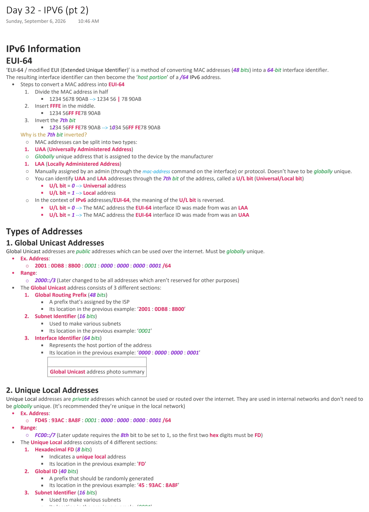
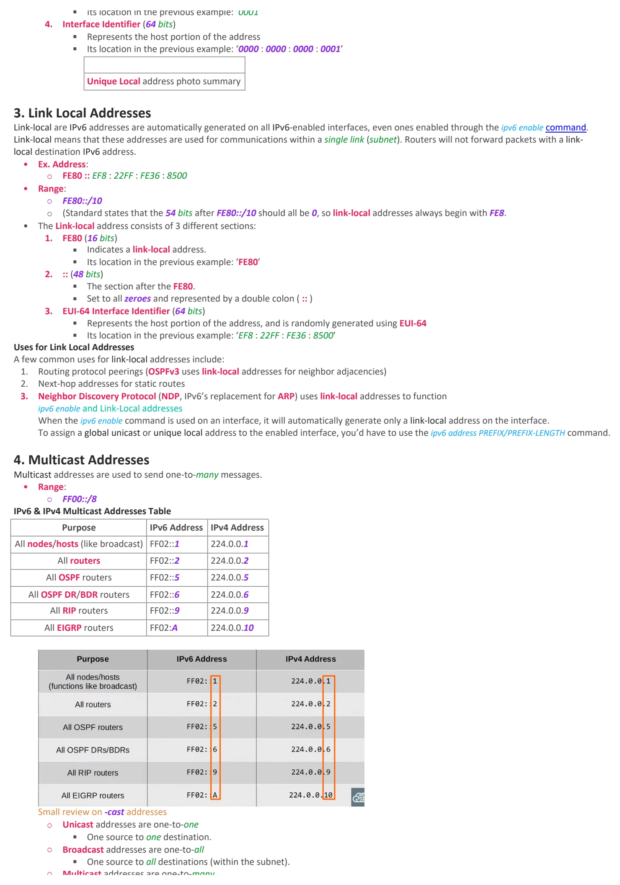
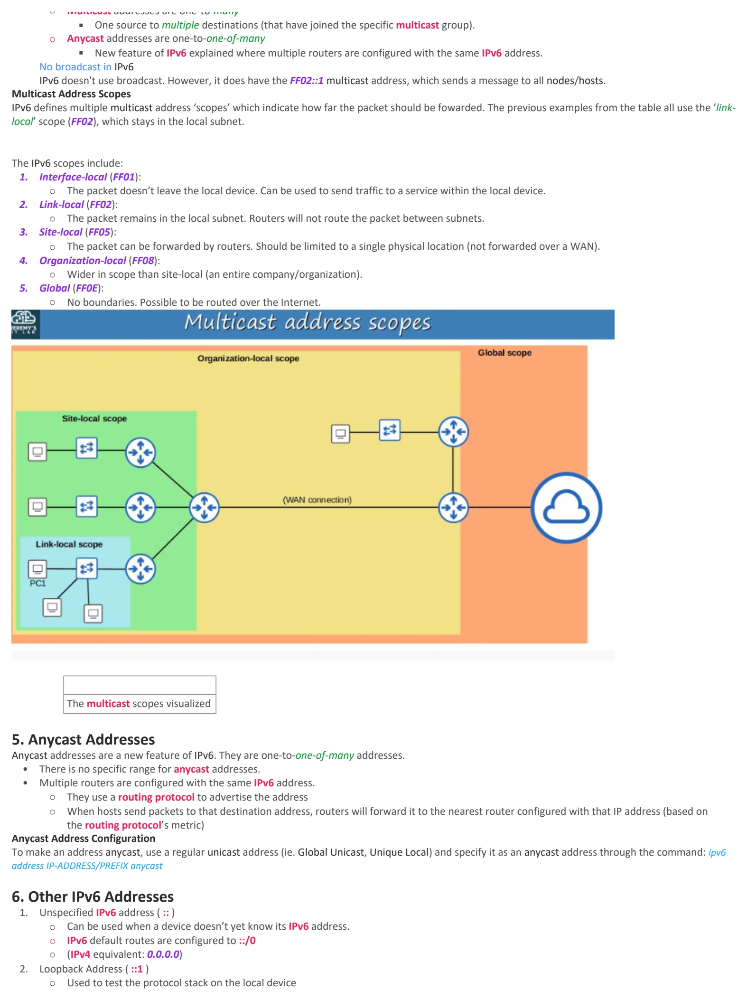

IPV6 (pt 2)
Download original PDF


Text view — IPV6 (pt 2)
Extracted from the original export. Diagrams and some formatting appear in the notes above.
Day 32 - IPV6 (pt 2) Sunday, September 6, 2026 10:46 AM IPv6 Information EUI-64 ‘EUI-64 / modified EUI (Extended Unique Identifier)’ is a method of converting MAC addresses (48 bits) into a 64-bit interface identifier. The resulting interface identifier can then become the ‘host portion’ of a /64 IPv6 address. • Steps to convert a MAC address into EUI-64 1. Divide the MAC address in half § 1234 5678 90AB --> 1234 56 | 78 90AB 2. Insert FFFE in the middle. § 1234 56FF FE78 90AB 3. Invert the 7th bit § 1234 56FF FE78 90AB --> 1034 56FF FE78 90AB Why is the 7th bit inverted? ○ MAC addresses can be split into two types: 1. UAA (Universally Administered Address) ○ Globally unique address that is assigned to the device by the manufacturer 1. LAA (Locally Administered Address) ○ Manually assigned by an admin (through the mac-address command on the interface) or protocol. Doesn’t have to be globally unique. ○ You can identify UAA and LAA addresses through the 7th bit of the address, called a U/L bit (Universal/Local bit) § U/L bit = 0 --> Universal address § U/L bit = 1 --> Local address ○ In the context of IPv6 addresses/EUI-64, the meaning of the U/L bit is reversed. § U/L bit = 0 --> The MAC address the EUI-64 interface ID was made from was an LAA § U/L bit = 1 --> The MAC address the EUI-64 interface ID was made from was an UAA Types of Addresses 1. Global Unicast Addresses Global Unicast addresses are public addresses which can be used over the internet. Must be globally unique. • Ex. Address: ○ 2001 : 0DB8 : 8B00 : 0001 : 0000 : 0000 : 0000 : 0001 /64 • Range: ○ 2000::/3 (Later changed to be all addresses which aren’t reserved for other purposes) • The Global Unicast address consists of 3 different sections: 1. Global Routing Prefix (48 bits) § A prefix that’s assigned by the ISP § Its location in the previous example: ‘2001 : 0DB8 : 8B00’ 2. Subnet Identifier (16 bits) § Used to make various subnets § Its location in the previous example: ‘0001’ 3. Interface Identifier (64 bits) § Represents the host portion of the address § Its location in the previous example: ‘0000 : 0000 : 0000 : 0001’ Global Unicast address photo summary 2. Unique Local Addresses Unique Local addresses are private addresses which cannot be used or routed over the internet. They are used in internal networks and don't need to be globally unique. (It’s recommended they’re unique in the local network) • Ex. Address: ○ FD45 : 93AC : 8A8F : 0001 : 0000 : 0000 : 0000 : 0001 /64 • Range: ○ FC00::/7 (Later update requires the 8th bit to be set to 1, so the first two hex digits must be FD) • The Unique Local address consists of 4 different sections: 1. Hexadecimal FD (8 bits) § Indicates a unique local address § Its location in the previous example: 'FD' 2. Global ID (40 bits) § A prefix that should be randomly generated § Its location in the previous example: ‘45 : 93AC : 8A8F’ 3. Subnet Identifier (16 bits) § Used to make various subnets § Its location in the previous example: ‘0001’ 4. Interface Identifier (64 bits) § Represents the host portion of the address § Its location in the previous example: ‘0000 : 0000 : 0000 : 0001’ Unique Local address photo summary 3. Link Local Addresses Link-local are IPv6 addresses are automatically generated on all IPv6-enabled interfaces, even ones enabled through the ipv6 enable command. Link-local means that these addresses are used for communications within a single link (subnet). Routers will not forward packets with a link- local destination IPv6 address. • Ex. Address: ○ FE80 :: EF8 : 22FF : FE36 : 8500 • Range: ○ FE80::/10 ○ (Standard states that the 54 bits after FE80::/10 should all be 0, so link-local addresses always begin with FE8. • The Link-local address consists of 3 different sections: 1. FE80 (16 bits) § Indicates a link-local address. § Its location in the previous example: ‘FE80’ 2. :: (48 bits) § The section after the FE80. § Set to all zeroes and represented by a double colon ( :: ) 3. EUI-64 Interface Identifier (64 bits) § Represents the host portion of the address, and is randomly generated using EUI-64 § Its location in the previous example: ‘EF8 : 22FF : FE36 : 8500’ Uses for Link Local Addresses A few common uses for link-local addresses include: 1. Routing protocol peerings (OSPFv3 uses link-local addresses for neighbor adjacencies) 2. Next-hop addresses for static routes 3. Neighbor Discovery Protocol (NDP, IPv6’s replacement for ARP) uses link-local addresses to function ipv6 enable and Link-Local addresses When the ipv6 enable command is used on an interface, it will automatically generate only a link-local address on the interface. To assign a global unicast or unique local address to the enabled interface, you’d have to use the ipv6 address PREFIX/PREFIX-LENGTH command. 4. Multicast Addresses Multicast addresses are used to send one-to-many messages. • Range: ○ FF00::/8 IPv6 & IPv4 Multicast Addresses Table Purpose IPv6 Address IPv4 Address All nodes/hosts (like broadcast) FF02::1 224.0.0.1 All routers FF02::2 224.0.0.2 All OSPF routers FF02::5 224.0.0.5 All OSPF DR/BDR routers FF02::6 224.0.0.6 All RIP routers FF02::9 224.0.0.9 All EIGRP routers FF02:A 224.0.0.10 Small review on -cast addresses ○ Unicast addresses are one-to-one § One source to one destination. ○ Broadcast addresses are one-to-all § One source to all destinations (within the subnet). ○ Multicast addresses are one-to-many § One source to multiple destinations (that have joined the specific multicast group). ○ Anycast addresses are one-to-one-of-many § New feature of IPv6 explained where multiple routers are configured with the same IPv6 address. No broadcast in IPv6 IPv6 doesn't use broadcast. However, it does have the FF02::1 multicast address, which sends a message to all nodes/hosts. Multicast Address Scopes IPv6 defines multiple multicast address ‘scopes’ which indicate how far the packet should be fowarded. The previous examples from the table all use the ‘link- local’ scope (FF02), which stays in the local subnet. The IPv6 scopes include: 1. Interface-local (FF01): ○ The packet doesn’t leave the local device. Can be used to send traffic to a service within the local device. 2. Link-local (FF02): ○ The packet remains in the local subnet. Routers will not route the packet between subnets. 3. Site-local (FF05): ○ The packet can be forwarded by routers. Should be limited to a single physical location (not forwarded over a WAN). 4. Organization-local (FF08): ○ Wider in scope than site-local (an entire company/organization). 5. Global (FF0E): ○ No boundaries. Possible to be routed over the Internet. The multicast scopes visualized 5. Anycast Addresses Anycast addresses are a new feature of IPv6. They are one-to-one-of-many addresses. • There is no specific range for anycast addresses. • Multiple routers are configured with the same IPv6 address. ○ They use a routing protocol to advertise the address ○ When hosts send packets to that destination address, routers will forward it to the nearest router configured with that IP address (based on the routing protocol’s metric) Anycast Address Configuration To make an address anycast, use a regular unicast address (ie. Global Unicast, Unique Local) and specify it as an anycast address through the command: ipv6 address IP-ADDRESS/PREFIX anycast 6. Other IPv6 Addresses 1. Unspecified IPv6 address ( :: ) ○ Can be used when a device doesn’t yet know its IPv6 address. ○ IPv6 default routes are configured to ::/0 ○ (IPv4 equivalent: 0.0.0.0) 2. Loopback Address ( ::1 ) ○ Used to test the protocol stack on the local device ○ Messages sent to this address are processed within the local device, but not sent to other devices. ○ (IPv4 equivalent: 127.0.0.0/8 address range) Day 32 - IPV6 (pt 2) Sunday, September 6, 2026 10:46 AM IPv6 Information EUI-64 ‘EUI-64 / modified EUI (Extended Unique Identifier)’ is a method of converting MAC addresses (48 bits) into a 64-bit interface identifier. The resulting interface identifier can then become the ‘host portion’ of a /64 IPv6 address. • Steps to convert a MAC address into EUI-64 1. Divide the MAC address in half § 1234 5678 90AB --> 1234 56 | 78 90AB 2. Insert FFFE in the middle. § 1234 56FF FE78 90AB 3. Invert the 7th bit § 1234 56FF FE78 90AB --> 1034 56FF FE78 90AB Why is the 7th bit inverted? ○ MAC addresses can be split into two types: 1. UAA (Universally Administered Address) ○ Globally unique address that is assigned to the device by the manufacturer 1. LAA (Locally Administered Address) ○ Manually assigned by an admin (through the mac-address command on the interface) or protocol. Doesn’t have to be globally unique. ○ You can identify UAA and LAA addresses through the 7th bit of the address, called a U/L bit (Universal/Local bit) § U/L bit = 0 --> Universal address § U/L bit = 1 --> Local address ○ In the context of IPv6 addresses/EUI-64, the meaning of the U/L bit is reversed. § U/L bit = 0 --> The MAC address the EUI-64 interface ID was made from was an LAA § U/L bit = 1 --> The MAC address the EUI-64 interface ID was made from was an UAA Types of Addresses 1. Global Unicast Addresses Global Unicast addresses are public addresses which can be used over the internet. Must be globally unique. • Ex. Address: ○ 2001 : 0DB8 : 8B00 : 0001 : 0000 : 0000 : 0000 : 0001 /64 • Range: ○ 2000::/3 (Later changed to be all addresses which aren’t reserved for other purposes) • The Global Unicast address consists of 3 different sections: 1. Global Routing Prefix (48 bits) § A prefix that’s assigned by the ISP § Its location in the previous example: ‘2001 : 0DB8 : 8B00’ 2. Subnet Identifier (16 bits) § Used to make various subnets § Its location in the previous example: ‘0001’ 3. Interface Identifier (64 bits) § Represents the host portion of the address § Its location in the previous example: ‘0000 : 0000 : 0000 : 0001’ Global Unicast address photo summary 2. Unique Local Addresses Unique Local addresses are private addresses which cannot be used or routed over the internet. They are used in internal networks and don't need to be globally unique. (It’s recommended they’re unique in the local network) • Ex. Address: ○ FD45 : 93AC : 8A8F : 0001 : 0000 : 0000 : 0000 : 0001 /64 • Range: ○ FC00::/7 (Later update requires the 8th bit to be set to 1, so the first two hex digits must be FD) • The Unique Local address consists of 4 different sections: 1. Hexadecimal FD (8 bits) § Indicates a unique local address § Its location in the previous example: 'FD' 2. Global ID (40 bits) § A prefix that should be randomly generated § Its location in the previous example: ‘45 : 93AC : 8A8F’ 3. Subnet Identifier (16 bits) § Used to make various subnets § Its location in the previous example: ‘0001’ 4. Interface Identifier (64 bits) § Represents the host portion of the address § Its location in the previous example: ‘0000 : 0000 : 0000 : 0001’ Unique Local address photo summary 3. Link Local Addresses Link-local are IPv6 addresses are automatically generated on all IPv6-enabled interfaces, even ones enabled through the ipv6 enable command. Link-local means that these addresses are used for communications within a single link (subnet). Routers will not forward packets with a link- local destination IPv6 address. • Ex. Address: ○ FE80 :: EF8 : 22FF : FE36 : 8500 • Range: ○ FE80::/10 ○ (Standard states that the 54 bits after FE80::/10 should all be 0, so link-local addresses always begin with FE8. • The Link-local address consists of 3 different sections: 1. FE80 (16 bits) § Indicates a link-local address. § Its location in the previous example: ‘FE80’ 2. :: (48 bits) § The section after the FE80. § Set to all zeroes and represented by a double colon ( :: ) 3. EUI-64 Interface Identifier (64 bits) § Represents the host portion of the address, and is randomly generated using EUI-64 § Its location in the previous example: ‘EF8 : 22FF : FE36 : 8500’ Uses for Link Local Addresses A few common uses for link-local addresses include: 1. Routing protocol peerings (OSPFv3 uses link-local addresses for neighbor adjacencies) 2. Next-hop addresses for static routes 3. Neighbor Discovery Protocol (NDP, IPv6’s replacement for ARP) uses link-local addresses to function ipv6 enable and Link-Local addresses When the ipv6 enable command is used on an interface, it will automatically generate only a link-local address on the interface. To assign a global unicast or unique local address to the enabled interface, you’d have to use the ipv6 address PREFIX/PREFIX-LENGTH command. 4. Multicast Addresses Multicast addresses are used to send one-to-many messages. • Range: ○ FF00::/8 IPv6 & IPv4 Multicast Addresses Table Purpose IPv6 Address IPv4 Address All nodes/hosts (like broadcast) FF02::1 224.0.0.1 All routers FF02::2 224.0.0.2 All OSPF routers FF02::5 224.0.0.5 All OSPF DR/BDR routers FF02::6 224.0.0.6 All RIP routers FF02::9 224.0.0.9 All EIGRP routers FF02:A 224.0.0.10 Small review on -cast addresses ○ Unicast addresses are one-to-one § One source to one destination. ○ Broadcast addresses are one-to-all § One source to all destinations (within the subnet). ○ Multicast addresses are one-to-many § One source to multiple destinations (that have joined the specific multicast group). ○ Anycast addresses are one-to-one-of-many § New feature of IPv6 explained where multiple routers are configured with the same IPv6 address. No broadcast in IPv6 IPv6 doesn't use broadcast. However, it does have the FF02::1 multicast address, which sends a message to all nodes/hosts. Multicast Address Scopes IPv6 defines multiple multicast address ‘scopes’ which indicate how far the packet should be fowarded. The previous examples from the table all use the ‘link- local’ scope (FF02), which stays in the local subnet. The IPv6 scopes include: 1. Interface-local (FF01): ○ The packet doesn’t leave the local device. Can be used to send traffic to a service within the local device. 2. Link-local (FF02): ○ The packet remains in the local subnet. Routers will not route the packet between subnets. 3. Site-local (FF05): ○ The packet can be forwarded by routers. Should be limited to a single physical location (not forwarded over a WAN). 4. Organization-local (FF08): ○ Wider in scope than site-local (an entire company/organization). 5. Global (FF0E): ○ No boundaries. Possible to be routed over the Internet. The multicast scopes visualized 5. Anycast Addresses Anycast addresses are a new feature of IPv6. They are one-to-one-of-many addresses. • There is no specific range for anycast addresses. • Multiple routers are configured with the same IPv6 address. ○ They use a routing protocol to advertise the address ○ When hosts send packets to that destination address, routers will forward it to the nearest router configured with that IP address (based on the routing protocol’s metric) Anycast Address Configuration To make an address anycast, use a regular unicast address (ie. Global Unicast, Unique Local) and specify it as an anycast address through the command: ipv6 address IP-ADDRESS/PREFIX anycast 6. Other IPv6 Addresses 1. Unspecified IPv6 address ( :: ) ○ Can be used when a device doesn’t yet know its IPv6 address. ○ IPv6 default routes are configured to ::/0 ○ (IPv4 equivalent: 0.0.0.0) 2. Loopback Address ( ::1 ) ○ Used to test the protocol stack on the local device ○ Messages sent to this address are processed within the local device, but not sent to other devices. ○ (IPv4 equivalent: 127.0.0.0/8 address range) Day 32 - IPV6 (pt 2) Sunday, September 6, 2026 10:46 AM IPv6 Information EUI-64 ‘EUI-64 / modified EUI (Extended Unique Identifier)’ is a method of converting MAC addresses (48 bits) into a 64-bit interface identifier. The resulting interface identifier can then become the ‘host portion’ of a /64 IPv6 address. • Steps to convert a MAC address into EUI-64 1. Divide the MAC address in half § 1234 5678 90AB --> 1234 56 | 78 90AB 2. Insert FFFE in the middle. § 1234 56FF FE78 90AB 3. Invert the 7th bit § 1234 56FF FE78 90AB --> 1034 56FF FE78 90AB Why is the 7th bit inverted? ○ MAC addresses can be split into two types: 1. UAA (Universally Administered Address) ○ Globally unique address that is assigned to the device by the manufacturer 1. LAA (Locally Administered Address) ○ Manually assigned by an admin (through the mac-address command on the interface) or protocol. Doesn’t have to be globally unique. ○ You can identify UAA and LAA addresses through the 7th bit of the address, called a U/L bit (Universal/Local bit) § U/L bit = 0 --> Universal address § U/L bit = 1 --> Local address ○ In the context of IPv6 addresses/EUI-64, the meaning of the U/L bit is reversed. § U/L bit = 0 --> The MAC address the EUI-64 interface ID was made from was an LAA § U/L bit = 1 --> The MAC address the EUI-64 interface ID was made from was an UAA Types of Addresses 1. Global Unicast Addresses Global Unicast addresses are public addresses which can be used over the internet. Must be globally unique. • Ex. Address: ○ 2001 : 0DB8 : 8B00 : 0001 : 0000 : 0000 : 0000 : 0001 /64 • Range: ○ 2000::/3 (Later changed to be all addresses which aren’t reserved for other purposes) • The Global Unicast address consists of 3 different sections: 1. Global Routing Prefix (48 bits) § A prefix that’s assigned by the ISP § Its location in the previous example: ‘2001 : 0DB8 : 8B00’ 2. Subnet Identifier (16 bits) § Used to make various subnets § Its location in the previous example: ‘0001’ 3. Interface Identifier (64 bits) § Represents the host portion of the address § Its location in the previous example: ‘0000 : 0000 : 0000 : 0001’ Global Unicast address photo summary 2. Unique Local Addresses Unique Local addresses are private addresses which cannot be used or routed over the internet. They are used in internal networks and don't need to be globally unique. (It’s recommended they’re unique in the local network) • Ex. Address: ○ FD45 : 93AC : 8A8F : 0001 : 0000 : 0000 : 0000 : 0001 /64 • Range: ○ FC00::/7 (Later update requires the 8th bit to be set to 1, so the first two hex digits must be FD) • The Unique Local address consists of 4 different sections: 1. Hexadecimal FD (8 bits) § Indicates a unique local address § Its location in the previous example: 'FD' 2. Global ID (40 bits) § A prefix that should be randomly generated § Its location in the previous example: ‘45 : 93AC : 8A8F’ 3. Subnet Identifier (16 bits) § Used to make various subnets § Its location in the previous example: ‘0001’ 4. Interface Identifier (64 bits) § Represents the host portion of the address § Its location in the previous example: ‘0000 : 0000 : 0000 : 0001’ Unique Local address photo summary 3. Link Local Addresses Link-local are IPv6 addresses are automatically generated on all IPv6-enabled interfaces, even ones enabled through the ipv6 enable command. Link-local means that these addresses are used for communications within a single link (subnet). Routers will not forward packets with a link- local destination IPv6 address. • Ex. Address: ○ FE80 :: EF8 : 22FF : FE36 : 8500 • Range: ○ FE80::/10 ○ (Standard states that the 54 bits after FE80::/10 should all be 0, so link-local addresses always begin with FE8. • The Link-local address consists of 3 different sections: 1. FE80 (16 bits) § Indicates a link-local address. § Its location in the previous example: ‘FE80’ 2. :: (48 bits) § The section after the FE80. § Set to all zeroes and represented by a double colon ( :: ) 3. EUI-64 Interface Identifier (64 bits) § Represents the host portion of the address, and is randomly generated using EUI-64 § Its location in the previous example: ‘EF8 : 22FF : FE36 : 8500’ Uses for Link Local Addresses A few common uses for link-local addresses include: 1. Routing protocol peerings (OSPFv3 uses link-local addresses for neighbor adjacencies) 2. Next-hop addresses for static routes 3. Neighbor Discovery Protocol (NDP, IPv6’s replacement for ARP) uses link-local addresses to function ipv6 enable and Link-Local addresses When the ipv6 enable command is used on an interface, it will automatically generate only a link-local address on the interface. To assign a global unicast or unique local address to the enabled interface, you’d have to use the ipv6 address PREFIX/PREFIX-LENGTH command. 4. Multicast Addresses Multicast addresses are used to send one-to-many messages. • Range: ○ FF00::/8 IPv6 & IPv4 Multicast Addresses Table Purpose IPv6 Address IPv4 Address All nodes/hosts (like broadcast) FF02::1 224.0.0.1 All routers FF02::2 224.0.0.2 All OSPF routers FF02::5 224.0.0.5 All OSPF DR/BDR routers FF02::6 224.0.0.6 All RIP routers FF02::9 224.0.0.9 All EIGRP routers FF02:A 224.0.0.10 Small review on -cast addresses ○ Unicast addresses are one-to-one § One source to one destination. ○ Broadcast addresses are one-to-all § One source to all destinations (within the subnet). ○ Multicast addresses are one-to-many § One source to multiple destinations (that have joined the specific multicast group). ○ Anycast addresses are one-to-one-of-many § New feature of IPv6 explained where multiple routers are configured with the same IPv6 address. No broadcast in IPv6 IPv6 doesn't use broadcast. However, it does have the FF02::1 multicast address, which sends a message to all nodes/hosts. Multicast Address Scopes IPv6 defines multiple multicast address ‘scopes’ which indicate how far the packet should be fowarded. The previous examples from the table all use the ‘link- local’ scope (FF02), which stays in the local subnet. The IPv6 scopes include: 1. Interface-local (FF01): ○ The packet doesn’t leave the local device. Can be used to send traffic to a service within the local device. 2. Link-local (FF02): ○ The packet remains in the local subnet. Routers will not route the packet between subnets. 3. Site-local (FF05): ○ The packet can be forwarded by routers. Should be limited to a single physical location (not forwarded over a WAN). 4. Organization-local (FF08): ○ Wider in scope than site-local (an entire company/organization). 5. Global (FF0E): ○ No boundaries. Possible to be routed over the Internet. The multicast scopes visualized 5. Anycast Addresses Anycast addresses are a new feature of IPv6. They are one-to-one-of-many addresses. • There is no specific range for anycast addresses. • Multiple routers are configured with the same IPv6 address. ○ They use a routing protocol to advertise the address ○ When hosts send packets to that destination address, routers will forward it to the nearest router configured with that IP address (based on the routing protocol’s metric) Anycast Address Configuration To make an address anycast, use a regular unicast address (ie. Global Unicast, Unique Local) and specify it as an anycast address through the command: ipv6 address IP-ADDRESS/PREFIX anycast 6. Other IPv6 Addresses 1. Unspecified IPv6 address ( :: ) ○ Can be used when a device doesn’t yet know its IPv6 address. ○ IPv6 default routes are configured to ::/0 ○ (IPv4 equivalent: 0.0.0.0) 2. Loopback Address ( ::1 ) ○ Used to test the protocol stack on the local device ○ Messages sent to this address are processed within the local device, but not sent to other devices. ○ (IPv4 equivalent: 127.0.0.0/8 address range)